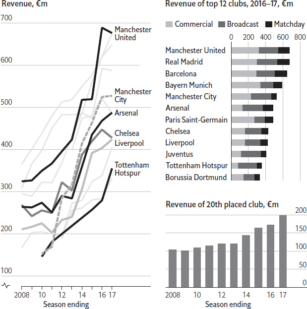

It has become common behaviour in top-level tennis, like the pumped fist on winning a set and the expletive aimed at a coach after an error. “Grunting” is too limited a name for it. The noises made by modern tennis professionals range from wounded roars to frantic shrieks. Gone are the days of hushed rallies, punctuated only by the thwack of felt on strings. Like sledging in cricket (talking to an opponent to disturb their concentration) and bat-flipping in baseball (throwing the bat in the air after a sizeable hit), squealing in tennis is considered by some players and spectators to be a blight on the game.
All three vices have been around for decades. Tennis’s best-known early grunters were Jimmy Connors and John McEnroe. Stars of the 1970s and the 1980s, and hardly famed for their courtesy on court, they used to groan with ostentatious exertion. Yet if they could claim to be exhaling with effort during particularly strenuous rallies, then Monica Seles extended the practice. In the 1990s she pioneered stroke-by-stroke screeches, delivered apparently regardless of exertion. Ms Seles is one of several successful whiners to have been trained by Nick Bollettieri, an American coach, along with Andre Agassi, the Williams sisters and Maria Sharapova. Mr Bollettieri claims that the tactic is “a release of energy in a constructive way”. At more than 100 decibels, Ms Sharapova’s wailing is, briefly, almost as loud as a chainsaw or helicopter. Rafael Nadal is another bellower, to the irritation of his rival, Roger Federer. But even the GOAT (the “Greatest Of All Time”, as Mr Federer’s fans call him) has been known to bray under duress.
Grunting in tennis has been shown to give the player responsible a definite advantage. Two separate studies of college players have found that the speed of their serves and ground-strokes increased by 4–5% when they groaned. The authors of both papers note that similar gains in performance have been observed in noisy weightlifters and martial artists. The most likely cause is the extra tension created in the athlete’s core muscles by the grunt. The pitch of the grunt also seems relevant. An analysis of 50 fixtures featuring some of the world’s top 30 players demonstrated that the men hollered a semitone higher in matches that they lost, and that the difference in pitch was clear from early in the contest. It was unclear, however, whether this change was a cause or effect of the poorer performance. Players seeking further reason to unlock their inner grunter should also note the effects of the sounds on their opponents. An experiment which required subjects to guess the direction of tennis shots on a video screen found that an accompanying burst of white noise hampered their reaction times. It took them an extra 30 milliseconds to read the direction of the ball, during which it would typically travel two feet. The participants were merely recreational players, but professionals may be even more reliant on sound, because they can use it to guess the spin on the ball.
With such compelling proof of grunting’s benefits, and so much to be gained from winning – the total prize money for a grand slam is typically $40m–50m – it is remarkable that there are any silent rallies at all. A crackdown on excessive exhaling seems unlikely. Rumours of an on-court “gruntometer” to establish a maximum volume faded five years ago. Umpires are allowed to award points against a player who causes an opponent a “deliberate hindrance”, but rarely do so. “Quiet please”, their favourite instruction, applies only to the crowd. For the foreseeable future, tennis fans will have to put up with the unseemly racket.
When it comes to Scrabble, Nigerians rule the board. In November 2017, they retained the team title at the world championships in Nairobi. Nigeria boasts more top-100 players than any other country. But the impact of board games in Africa’s most populous country goes beyond these world-class Scrabble-masters. Board games are played across Nigeria, from indigenous games like ayo that make use of counters or pebbles (mancala is a similar game in the United States), to chess and Monopoly.
It is impossible to quantify how many Nigerians play board games, but there is no doubt that they are more popular in the better-educated south. Prince Anthony Ikolo, the coach of Nigeria’s national Scrabble team, estimates that 4,000 Scrabblers play in more than 100 clubs around the country (compared with around 2,000–2,500 members in 152 clubs in America and Canada combined). The Niger Delta states and Lagos are home to many of the country’s Scrabble champions. Wellington Jighere, who won the world championship in 2015, is from the oil-rich city of Warri, which is particularly renowned for producing world-class players.
On the national tournament circuit, cash prizes can reach $10,000. Prestigious schools have chess and Scrabble teams, and there are also university tournaments. Lagos, the country’s teeming commercial capital, got its own Monopoly board in 2012. The property-buying game was made an official sport in Lagos state in 2016. In September that year, more than 1,200 students competed for the top prize of a 600,000 naira ($1,700) education grant. In the process, they broke the world record for the number of students playing Monopoly.
Board games are mainly a middle-class pursuit, although Ludo, draughts and their ilk are also popular among the less educated. Many Nigerians have a competitive streak: the country’s unofficial motto, “Naija no dey carry last”, can be roughly translated as “Nigerians strive to finish first.” Those with an intellectual bent may therefore relish challenging others at Monopoly or Scrabble. Many say their skills were nurtured during long holidays and evenings without regular electricity, by parents who were keen for their offspring to spend time “IQ building” rather than idling. Board games also allow Nigerians to focus on something other than the daily wahala, a word for trouble or stress (be it watching the hours tick by in urban traffic jams, appeasing a corrupt policeman or finding the money to keep the family generator running). And in a country where millions of Evangelical Christians follow a prosperity gospel and wealth is often idolised, Monopoly can temporarily allow Nigerians to indulge their fantasies.
Australia’s waters are some of the most dangerous in the world. Ignoring, for a moment, the dangers posed by jellyfish and salt-water crocodiles, the average annual number of so-called “unprovoked” shark attacks more than doubled between 1990–2000 and 2005–2015, to 15. One company in Western Australia has a futuristic solution. Shark Alert International has equipped a drone with military-grade cameras that can “x-ray” the water, then send alerts to lifeguards and even surfers’ watches. The technology was originally designed to help America detect a different foe: Russian submarines. It sees deep into the water by taking images at several different optical frequencies every second. In tests in California, the company said that it could spot dummy sharks 15 feet (4.6 metres) beneath the surface with total accuracy. The cameras might work at twice that depth in Perth’s clear waters.
Helicopters and low-flying planes have long patrolled popular beaches. Yet human spotters are expensive and often ineffectual because not all sharks swim near the surface. Choppy waters and bright reflections make them difficult to spot when they do. Drones are cheaper, can hover over beaches constantly, and have already been tested in some parts of the country. In New South Wales, another hotspot for attacks, researchers have also combined drones with software able to identify sharks. The drones feed live videos through a system that is taught how to differentiate sharks from surfers and boats with far greater accuracy than the human eye. Messages can be relayed to lifeguards and emergency services, while megaphones attached to the drones blast out warnings when a dangerous species is spotted.
Politicians are buying into other high-tech solutions as well. One involves the modification of drum-lines, which hang baited hooks between a buoy and the ocean floor, to catch sharks that might otherwise swim towards the beaches. Some new versions of the hooks can alert officials when they snag a shark, allowing the fish to be tagged, towed and released far away in deeper waters. Scientists using these “smart” drum-lines in northern Brazil reported a 97% decline in attacks. After a young surfer was killed in April 2017, Western Australia’s Labor government subsidised 1,000 personal deterrent devices called Shark Shields, which emit an electromagnetic field supposed to ward off attacks. Researchers are also experimenting with camouflaged wetsuits that seem to deter nibbles, and “counter-illumination” surfboards whose undersides emit light to diminish their silhouette. Some scientists worry about public splurges on such technologies. The Shark Shield, for example, may deter some “investigative” attacks, but has no effect on the ambushes to which surfers may fall victim. And sharks still perish on the smart drum-lines that are supposed to save them.
Culling, however, is even worse. Many shark species, including the great white, are protected in Australia. But politicians can seek exemptions, and numerous beaches are still guarded by nets and conventional drum-lines. These methods kill other, often endangered, species too. New South Wales snagged 133 “target” sharks in meshes along its northern coast between 2015 and 2016, as well as 615 other animals. And because shark attacks are so uncommon, the evidence for the effectiveness of the methods used to limit them is thin. The increase in shark attacks could be the result of an increase in the size of Australia’s shark populations after decades of conservation. But a bigger factor is likely to be the larger number of humans in the water. Once larger populations of sharks and humans are taken into account, today’s swimmers are actually safer than ever. With or without swanky new solutions, the risks of meeting a toothy end are microscopic.
In football, July and August are known as the “silly season” – and looking at Neymar’s record-breaking €222m ($261m) move from Barcelona to Paris Saint-Germain (PSG) in 2017, it is easy to see why. The two months form the summer transfer window in which football teams are allowed to buy each other’s players. With few competitive club games to enjoy, fans turn their attention to gossiping about exciting arrivals and unwanted departures. Neymar was both. PSG had been trying to prise the Brazilian star from Catalonia for months. The saga reached a ridiculous crescendo as his Barcelona teammates insisted on social media that he was staying, while newspapers told of his imminent departure, which was confirmed on August 3rd. Barcelona complained that PSG’s Qatari owners financed the purchase, rather than using the club’s revenues, which would breach the rules: teams are only allowed to spend as much as they earn. But as television revenues and sponsorship contracts have fattened, so have transfer fees. Most elite sides are willing to spend upwards of €40m on a talented addition to their squad. How do they arrange such deals?
Before anybody gets to the negotiating table, the buying team will have spent years identifying the right asset. Clubs have long relied on scouts to spot gifted youngsters, but they also have access to enormous video libraries and troves of performance data. Though the manager is usually involved in choosing the target, the haggling is often done by a “director of football” or senior executive. If the player is under contract at another club, the executive must make a formal approach to that team. There are rules that prevent the buyer from contacting the player or his agent beforehand, an underhand practice known as “tapping up”. Nonetheless, rumours of interest from either party are often leaked to the press.
The subsequent negotiations are mostly conducted via WhatsApp, a mobile-messaging service, says Jake Cohen, a sports lawyer: its group-chat function, instant updates and security make it particularly convenient. Several agreements have to be thrashed out before a transfer can be completed. The first deal concerns the fee that the vendors will receive. Some players, such as Neymar, have a release clause – a sum that his owners have to accept, in his case €222m. Once the selling club feels that the price is about right, the second stage begins: the buying team offers a contract to the player via his agent, which for Neymar meant an annual package of €30m after tax. The third settlement is the commission that the purchasing club pays the player’s agent, which is typically 5–10% of the transfer fee, according to Andrew McGregor of Brabners, a law firm. Neymar’s team of representatives, which included his father, pocketed a more generous reward of €38m. After putting its new player through a rigorous medical examination and filing the paperwork with the right regulatory bodies, the buying club can announce the signing.
If that seems complicated, it is made trickier still by fiddly clauses. The selling club might demand future payments if the player wins a trophy, or makes another lucrative move. The buyer will offer him performance bonuses, and compensation for using his image if he is a celebrity. Above all, the leverage lies with the footballer himself. If his contract expires, he is allowed to walk away – a disastrous loss for his old team and a windfall for his new one, which will reward him with a cut of the avoided transfer fee. As the price of a lethal striker or a robust defender spirals, expect to see more players holding their owners to ransom.
St Louis is a troubled, shrinking city in the American Midwest. Its population peaked at 850,000 in the 1950s. Decades of middle-class flight have left it with only 315,000 residents, of which almost one-third live at or below the federal poverty level. It has America’s highest per-capita murder rate and remains one of its most segregated cities. In 2014 riots erupted in Ferguson, a suburb, after a white police officer fatally shot a black teenager. It therefore seems an unlikely candidate to be a mecca for chess. Yet in May 2013, the United States Congress declared St Louis the chess capital of the country. How did this happen?
The rise of St Louis as a centre for chess dates back to 2008, when Rex Sinquefield chose the promotion of chess in his home town as a retirement project after making a fortune pioneering stockmarket index funds. (Mr Sinquefield is also politically active as a campaigner for the abolition of income tax and a sponsor of right-wing think-tanks.) In 2008 he founded the Chess Club and Scholastic Centre of St Louis, which has since become the headquarters of American chess. The 6,000-sq-ft centre includes a hall for tournaments, classrooms, a library and play areas. Some 1,000 members of all skill levels attend classes such as “Pure Beginners Ladies’ Knight”. In 2011 Mr Sinquefield helped bring the “World Chess Hall of Fame” to St Louis. It was set up, according to its website, “to educate visitors, fans, players and scholars by collecting, preserving, exhibiting and interpreting the game of chess and its continuing cultural and artistic significance”.
Mr Sinquefield’s perseverance paid off. The club began hosting the American championship, the nation’s top tournament, in 2009, bringing grandmasters galore to the city. (Before that it was held in different cities.) The Sinquefield tournament, set up by its eponymous benefactor, started in 2013 with a prize fund of $170,000. It attracts the world’s top players and was watched by some 1.5m online viewers in 2016. Several universities in the St Louis area now offer chess scholarships; Wesley So, the world number two, attended the city’s Webster University on one such scholarship. Local high schools, including in and around Ferguson, promote after-school classes. In 2017 Webster University won the national championship at the President’s Cup collegiate chess tournament in New York for the fifth time in a row. St Louis University finished third.
The revival of chess in St Louis has helped make America one of the world’s top chess nations again. In 2008 no American was in the top ten players, according to the World Chess Federation (The first American on the list appeared at in 17th place.) By 2017 three of the top ten players in the world (numbers two, four and seven) were American. Indeed, one of them, Fabiano Caruana, moved to St Louis in 2015.
In April 2017 Rialto Pictures and Studiocanal released The Graduate (1967) in a “new digital print” in honour of the film’s 50th anniversary. A 2016 version of Dr Strangelove (1964) boasts a “restored 4K digital transfer”. Citizen Kane (1941) “dazzles anew” in a “superb 75th-anniversary high-definition” digital restoration. Most film buffs understand these terms to be vaguely synonymous with improvement. But what does the process of “restoration” and “remastering” involve? And is it necessary, or just a ruse to sell old movies in new packaging?
Until the 1990s, movies were made exclusively with analogue cameras and photosensitive film. These produce an image as light streams through the lens and turns microscopic crystals into silver forms – which can then be developed into a permanent (and even colourful) picture, using chemicals in a darkroom. The resulting frame is highly detailed, but also susceptible to flaws. Temperature changes, dirt or rough handling can introduce stains or a grainy texture. Digital cinematography avoids these problems: an image-sensor chip converts the scene into millions of pixels, each of which is a miniature square with a numerically coded brightness and colour. Most modern movies are made and distributed this way. It allows directors to review takes immediately, lets editors enhance them on computers and enables studios to send them to cinemas without shipping hefty reels around the world. Some purists demur, because analogue film can still produce a higher resolution.
Viewers aren’t as picky, and almost all consume video digitally. Whether they are streaming Casablanca (1942) or watching The Godfather (1972) on Blu-ray (a more capacious format than DVDs), they are served a scan of the original 35mm film. The studio has converted each physical image into pixels. A full restoration and remastering of a film, however, goes a step further. The film roll is cleaned, to remove dust. Technicians then work frame by frame to restore the film, removing interference (such as noise, scratches and other signs of ageing), enhancing colours and sharpening outlines. Additional special effects and CGI may also be added. The audio will be overhauled at this stage, too, and perhaps remixed to introduce surround sound. The process is laborious, usually taking more than a year to complete.
Such painstaking adjustments are easy to miss without looking at a side-by-side comparison. Fans tend to focus instead on tweaks to the action, because some directors cannot resist tinkering with the story as well as the image. George Lucas, who pioneered the use of digital cameras in the Star Wars prequels at the beginning of the 21st century, upset fans by adding new scenes and editing dialogue in the original Star Wars trilogy when it was remastered in 1997. DVDs of Ridley Scott’s Blade Runner (1982) boast of a “futuristic vision perfected”, partly because of the improved special effects, but also thanks to a changed ending. There are other risks: though reels of film decay and are easy to lose, they can preserve a film for decades, whereas the longevity of digital media is less certain. And heavy-handed remastering risks losing some of the qualities that made these films so special in the first place.
888, an online betting firm, was fined a record £7.8m ($10.3m) in August 2017 after more than 7,000 vulnerable customers, who had disabled their betting accounts in an effort to prevent themselves from gambling, were still able to access their accounts. Yet away from the regulator’s gaze, bookies often stand accused of the opposite excess: being too prompt to shun winning customers. Successful bettors complain that their accounts get closed down for what are sometimes described as business decisions. Others say their wagers get capped overnight to minuscule amounts. The move may be unpopular with punters, but in most parts of the world it is legal.
Bookmakers say scrutinising winners is necessary to help prevent fraud. Competition in the gambling industry increased with the arrival of online betting, prompting bookmakers to offer odds on markets they did not previously cover. In some, such as eastern European football leagues, low wages and late payments make fertile ground for match-fixing. A winning streak at the windows can signal foul play. Most often, however, efforts to spot savvy customers are not rooted in a desire to thwart dodgy schemes. Rather, they are part of what industry insiders call “risk management”: to remain profitable, bookies seek to cap potential losses. As one betting consultant puts it, “Bookmakers close unprofitable accounts, just as insurance companies will not cover houses that are prone to flooding”. Betting outlets get to know their customers by gleaning information online, tracking web habits and checking whether punters visit odds-comparison sites. Profiling has also been made easier by the tightening of anti-money-laundering regulations, which require online punters to provide detailed information when opening accounts.
Bookmakers argue that such screening is needed to restrict their involvement with professional gamblers. That in turn allows them to offer better odds to ordinary punters. Critics retort that the net is being cast too widely. Bookies may spend considerable resources trying to spot those who bet for a living, many of whom hire quantitative analysts to estimate outcomes and develop hedging strategies (in some cases seeking to exploit discrepancies between odds offered by several bookmakers to make a guaranteed profit). Online bookmakers respond with sophisticated algorithms that flag customers betting odd amounts of money – £13.04, say – on the basis that ordinary punters usually wager round sums. They take a closer look at those who snub free bets or bonuses, which rarely fit professional bettors’ models and come with terms and conditions attached. They scrutinise user behaviour. While casual punters are more likely to bet minutes before an event begins, pros will often seek the best odds by laying their wager days in advance (because the longer one waits to bet, the more information becomes available about a particular event, and thus the easier it is for bookmakers to price it). And they look at customers’ tendencies to win, sometimes accepting bets at a loss if a punter, seemingly acting on inside knowledge, allows them to gain market intelligence.
This explains why professional gamblers rarely do business with high-street bookmakers. They often place their trades on betting exchanges like Betfair or Smarkets, which do not restrict winning customers (though Betfair charges a premium to some of its most successful users). Alternatively, they work with those bookmakers who use successful gamblers to improve the efficiency of their betting markets, and make most of their money on commission. These profess not to limit winning accounts and accept much bigger bets (Pinnacle, an influential bookie, often has a $1m limit for major events). Betting professionals also sneak in big trades via brokers, like Gambit Research, a British operation that uses technology to place multiple smaller bets with a range of bookmakers. Asian agents, in particular, have made their names in that trade: many are able to channel sizeable bets to local bookies anonymously. Unlike the sports they love, the games played by professional gamblers and bookmakers are kept out of the spotlight.
Manchester United retained their title as football’s highest-earning club when Deloitte, a consultancy, released its annual Football Money League rankings in January 2018. The Red Devils failed to qualify for the 2016–17 season of the lucrative Champions League, and had to settle for winning the Europa League, a second-tier international club competition. Nonetheless, even though the club’s success on the pitch paled in comparison with that of Real Madrid, who won both the Champions League and Spain’s La Liga, the broadcasting might of the English Premier League enabled Man U to remain at the top of the financial league table.
Wealth goals
Richest football clubs

Source: Deloitte
Deloitte’s rankings combine commercial deals such as sponsorships and shirt sales, match-day revenues and broadcast income. An ever-increasing share of clubs’ turnover now comes from the latter, which reached an all-time high of 45% last year. It is no surprise, then, that English teams comprise half of the top 20. The 2016–17 season was the first of a new three-year Premier League television deal worth around £2.8bn ($4bn) per season. This is more than twice the value of the broadcasting deals struck by any of the other “big five” European leagues (those in Spain, Germany, France and Italy). As a result, Southampton FC made more money last season than AS Roma, and Leicester City’s Champions League run pushed them above Inter Milan.
Overall, football is in fine financial health. Clubs’ revenues rose across the board last year, with the top 20 collectively raking in €7.9bn ($9.8bn) compared with €3.9bn a decade ago. But the richest continued to pull ahead. The richest three clubs had a combined gross of €2bn, more than the total turnover of the eleven clubs ranked 20–30. And with analysts warning that the next round of football-rights auctions in Europe will be less frenzied as viewers opt for cheaper internet-video services, the market may be reaching a peak – at least for now.